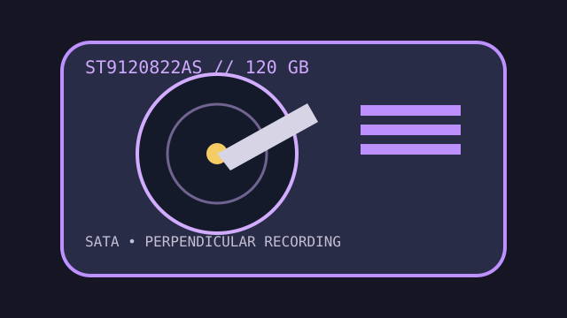

[ IDENTIFIED HDD // MODEL-SPECIFIC RECORD ]
Seagate Momentus 5400.3 ST9120822AS
120 GB, 2.5-inch SATA mobile HDD. Identify the full AS suffix; ATA/PATA members of the broader family are different devices.

IDENTIFICATION: Confirm exact model and firmware before using family-level setup information or selecting a replacement.
Recorded specifications
| Exact model / capacity | ST9120822AS / 120 GB nominal |
|---|---|
| Form factor / height | 2.5-inch / 9.5 mm |
| Interface | Serial ATA, 1.5 Gb/s generation, with NCQ |
| Rotation / cache | 5,400 RPM / 8 MB buffer |
| Sector / recording format | 512 bytes per sector; perpendicular magnetic recording (PMR), not 512e. |
Compatibility, noise, shock and reliability
- Requires a SATA controller/bridge and 5 V drive power; confirm the bay permits 9.5 mm height and the firmware can address the device.
- Manufacturer family data identifies about 2.3 bel idle noise and 2.5–3.0 bel seek sound power. Published shock limits are 350 G operating (2 ms) and 900 G non-operating (1 ms); these standardized limits do not make a powered drive impact-safe.
- The series' load/unload endurance and error-rate figures are ratings for a population. They cannot predict an individual drive's health; stop repeated tests if it clicks or returns read errors.
- Read-only imaging is preferable when preserving data. Verify the host-visible sector size before cloning or partitioning.
Manufacturer documents
- Seagate Momentus 5400 Data SheetManufacturer series specifications, including interface, acoustic and environmental ratings.
- Seagate Momentus 5400.3 SATA Product Manual (archival copy)Seagate-issued manual, publication 100398882; use its model table for the ST9120822AS suffix.
- Seagate Manuals LibraryOfficial manufacturer index for manuals and product support.